Rethink
Get tickets now →TEDxTAS 2017
January 14, 2017
Speakers
The TEDx Team
TEDxTaipeiAmericanSchool is organized and run by a student group. Our group of student organizers meet regularly to brainstorm and plan event details.
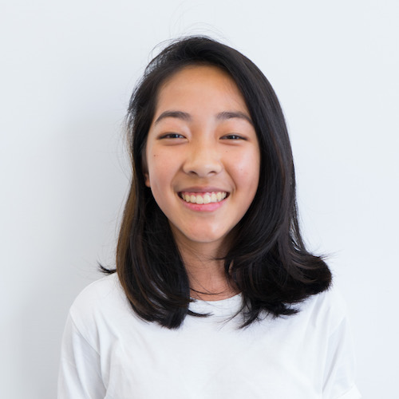Felicity Lin
Head Curator
">
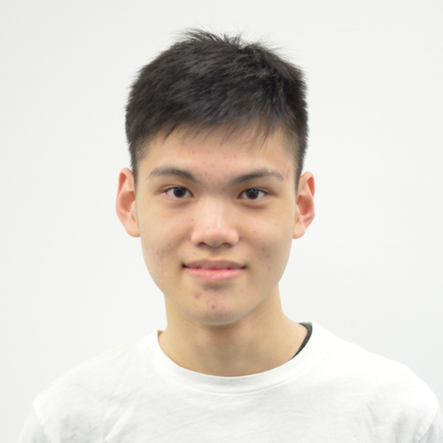Jerry Hsu
Head Curator
">
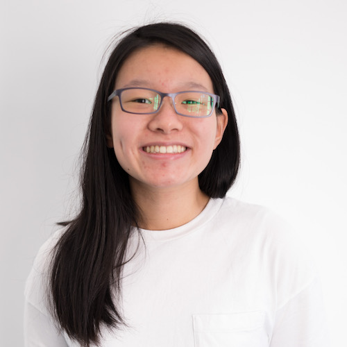Caroline Chou
Event Host
">
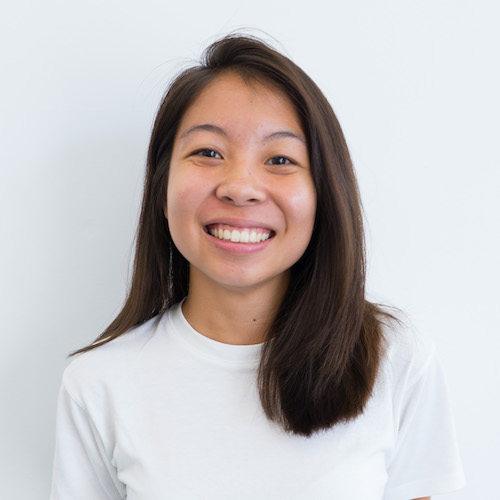April Chu
Design
">
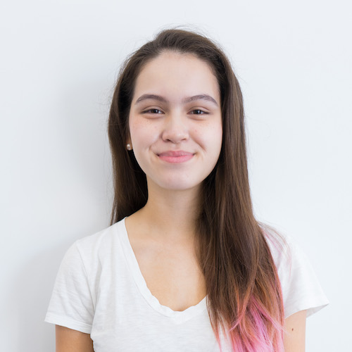Katie Fong
Speakers
">
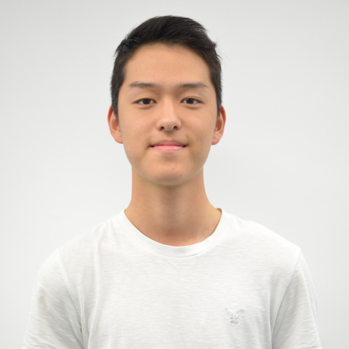Laurent Hsia
Production
">
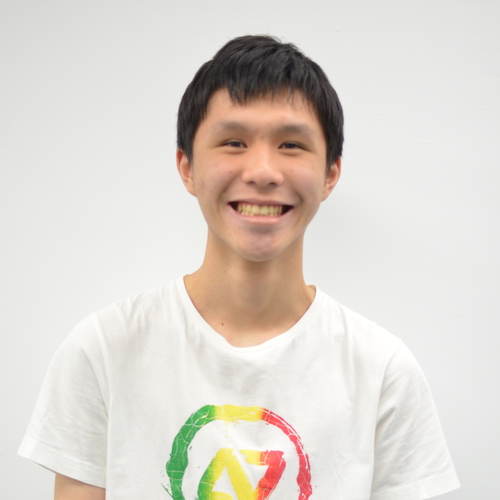Alex Huang
Technology
">
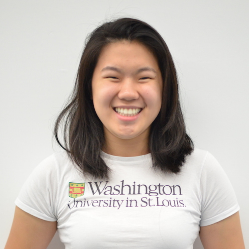Angela Chiang
Event Host
">
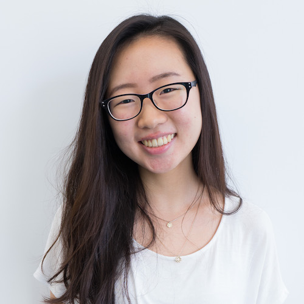Rachel Lee
Design
">
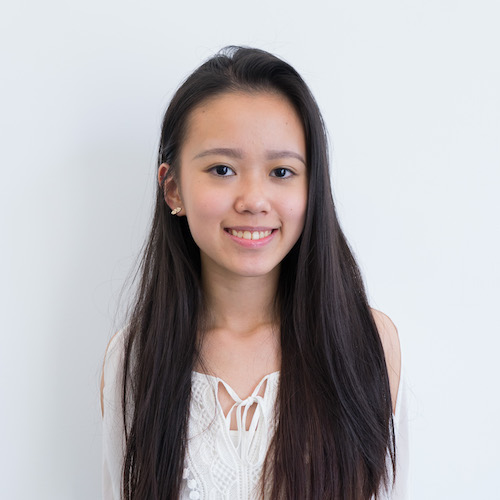Tiffany Chen
Speakers
">
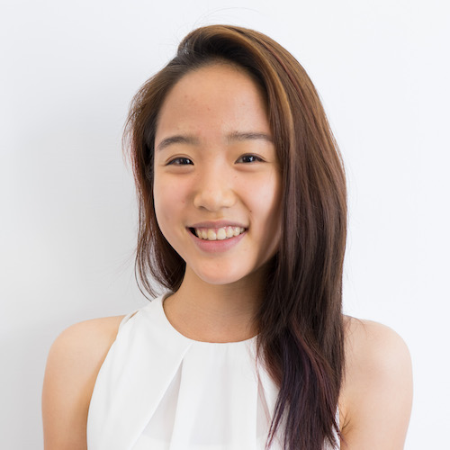Catherine Yeh
Production
">
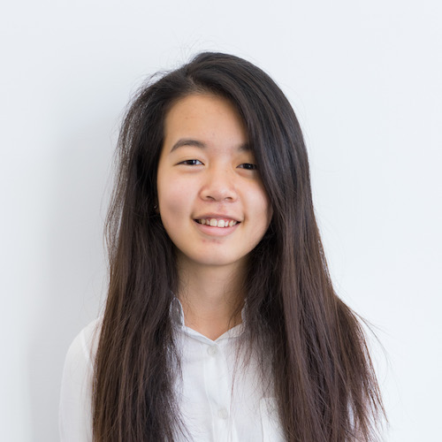Emily Chen
Marketing
">
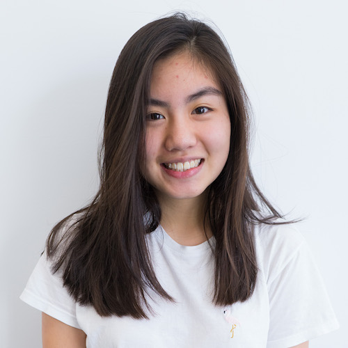Marina Chang
Speakers
">
Ashley Lin
Treasury
">
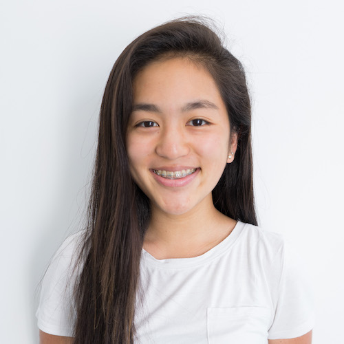Nicole Chang
Speakers
">
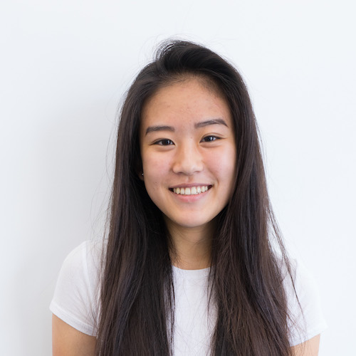Amanda Huang
Marketing
">What is TEDx?
In the spirit of ideas worth spreading, TED has created a program called TEDx. TEDx is a program of local, self-organized events that bring people together to share a TED-like experience. Our event is called TEDxTaipeiAmericanSchool, where x = independently organized TED event. At our TEDxTaipeiAmericanSchool event, TEDTalks video and live speakers will combine to spark deep discussion and connection in a small group. The TED Conference provides general guidance for the TEDx program, but individual TEDx events, including ours, are self-organized.